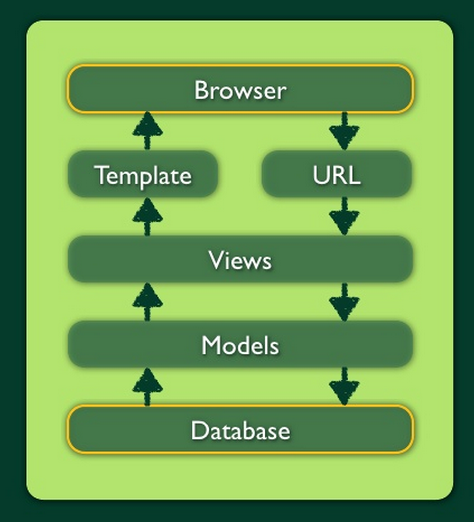
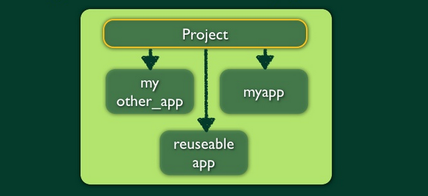

Django
Установка. Архитектура, установка и настройка
Django
Django
Django —
высокоуровневый
веб-фреймворк на python, способствующий быстрой разработке и чистому, прагматичному дизайну веб-приложений
История развития
2003 г. — внутренний проект в интернет-издательстве
Проектировался для нужд журналистов
Текущая версия — 1.5.4
Базовые принципы
DRY
Меньше кода
Простая работа с
CRUD
Независим от движка БД
Независим от типа веб-сервера
Ключевые особенности
ORM
Автоматическое создание «админки»
Лаконичное управление url
Встроенная система шаблонизации
Кеширование
Интернализация

Архитектура MTV
Model
Что у нас есть
View
Как это обрабатывается
Template
Как это выглядит
Модель
Набор классов на python
Транслируется в объекты базы данных
Нет необходимости писать SQL-запросы
Нет опасности SQL-инъекций
Представление
Функции python или классы
Обработка экземпляров данных из модели
Подготовка данных для «отрисовки» в html
Шаблоны
Отделение дизайна от кода
Минимум возможностей программирования
Простой язык описания
Внедряется в html-документ
Наследование и расширение
URL-маппер
Соотношение url-адреса к представлениям
Простой набор регулярных выражений
Строение django-проекта

Строение django-проекта
Приложение — самодостаточный набор фунциональных возможностей
Проект — одно или несколько приложений
Веб-приложение — приложение с файлом setting.py
Настройки django
Файл с набором переменных (констант)
MANAGERS
DATABASES
TIME_ZONE
MEDIA_ROOT / MEDIA_URL / STATIC_ROOT / STATIC_URL
INSTALLED_APPS
TEMPLATE_DIRS
...
Ресурсы
djangoproject.com
github.com/django
docs.djangoproject.com
djbook.ru/rel1.5/